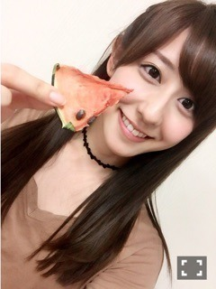

| 2016/09 05 Mon | 斎藤ちはる ドライ？(´>∀<｀)ゝ |
ちはるーむへようこそ〜！

みてみて！
ドライスイカ！！！
珍しい〜\( ˆoˆ )/
はむはむ。
味は...スイカでした。
水気のない、スイカ。笑
そりゃそうだ！
私ドライフルーツとか、ナッツとか大好き♡
ドライマンゴーが特に！
ケータリングに色々な
ドライフルーツが置いてあったんだけど、
ドライイチゴを、ミルクにいれる愛未。
美味しいの〜？と疑うひなちま。
ドライのはずなのに、ミルクにつけて
ただのイチゴにしてた(｡･o･｡)ﾉ笑
ドライの意味なっ！！！
私も飲んだけど
普通に美味しかったけどね( ◦˙ ˙◦ )笑
-------------------------♡
今日は、10/8発売の
「UTB +」さんの撮影をしてきました！
ソログラビア！！
ソログラビアの機会を中々
与えてもらえず悔しい日々を過ごしていたので
とても嬉しいです( ;o; )
ほぼほぼすっぴんで、
髪の毛にはアイロンも当てずに
とってもナチュラルな撮影でした！
そして、インタビューも飾らず。
私の本音をお話ししました。
インタビューを受けていたら
思わず涙が出てきてしまって
インタビュー終わるまで止まらなかったよ。
どんな話なのかはまだ言えないけど
1時間以上のロングインタビューだったので
私の事を沢山知れると思います。
皆さん、是非\( ˆoˆ )/
近くなったらまた告知します！
-------------------------♡
♬ ChihaMusic
「かくれんぼ」BIGMAMAさん
声の優しい雰囲気が好き！
歌詞や曲と合ってる〜
そして、ラスサビの歌詞が好き。
特に"俯いてなんかいないで
君らしくありのままで"
背中を押してくれるような
そっと隣にいてくれるような
暖かさを感じる。
オススメの音楽教えてくれた方
有難う！
聞いてみるね(﹡ˆ ˆ﹡)
今日もChihAnswer募集します！
皆さん待ってるね( ˘ω˘ )
おやすみ〜
斎藤ちはる